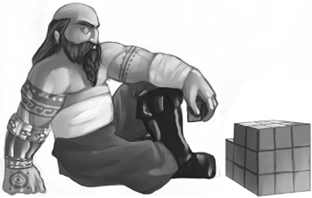

{% include JB/setup %}
{% raw %}
<div>
<a name="toppage" class="pcalibre calibre1"></a><table width="100%" border="0" cellspacing="0" cellpadding="0" class="sfbody"><tr valign="top" class="calibre2"><td class="calibre3"><a name="MainContent" class="pcalibre calibre1"></a><table width="95%" class="sfbody"><tr class="calibre2"><td class="pcalibre1 v"><!--Copyright (c) 2002 Safari Tech Books Online--><table width="100%" border="0" cellspacing="0" cellpadding="2" class="calibre4"><tr class="calibre2"><td valign="middle" class="v1 pcalibre1" height="5"></td></tr><tr class="calibre2"><td valign="middle" class="v1 pcalibre1"><table cellpadding="0" cellspacing="0" border="0" width="100%" class="calibre4"><tr class="calibre2"><td class="calibre6"><span class="calibre7"> </span>
                   
                  <span class="calibre7">   </span>
             <span class="calibre7"> </span></td></tr></table></td><td class="calibre8"/><td valign="middle" class="v2 pcalibre1"> 
           
          <span class="calibre7"><a target="_self" href="ch07lev1sec5.html" title="Previous section" class="pcalibre calibre1"></a></span>
				
				 
				
				<span class="calibre7"><a target="_self" href="ch08lev1sec1.html" title="Next section" class="pcalibre calibre1"></a></span></td></tr></table><div id="section" class="calibre15"><table width="100%" border="0" cellspacing="0" cellpadding="0" class="calibre4"><tr class="calibre2"><td valign="top" class="calibre8">Security Game Programming Networking Programming Greg Hoglund Gary McGraw Addison Wesley Professional Exploiting Online Games: Cheating Massively Distributed Systems<a name="ch08" class="pcalibre calibre1"></a>
<h2 id="title-IDALWRRF" class="docPrefaceTitle">8. Reversing</h2>
<a name="ch08img01" class="pcalibre calibre1"></a><p class="calibre28"><center class="calibre29">
<h5 class="docFigureTitle"></h5>
</center></p><p class="docText">
</p>
<br class="calibre15"/>
<p class="docText"><a name="iddle1952" class="pcalibre calibre1"></a><a name="iddle2026" class="pcalibre calibre1"></a>Reverse engineering is the art of taking something apart in order to understand how it works. The game hacking community focuses plenty of energy on reverse engineering, with special attention paid to game clients and the communications between a game client and game servers. Getting a handle on the logic of the game client and its data structures is a great way to understand how a game really works. A deep understanding gained through reversing is the bedrock on which game hacks are developed.</p>
<p class="docText">The techniques we describe in this chapter are in some sense prerequisite skills you'll need to tackle any new game title. New MMO titles are released all the time, each of which is likely to suffer from the same kinds of security problems we illustrate and describe throughout this book. That is, the techniques and vulnerabilities we describe aren't limited to one game or another.</p>
<p class="docText">Some techniques are more equal than others. Reverse engineering, for example, is an absolutely required skill if you want to craft an emulation server for any new game (see <a class="pcalibre6 pcalibre5 calibre1" href="ch09.html#ch09">Chapter 9</a>). Given a complete picture of the network protocol used between the game client and its associated central servers, it is possible to build a third-party server of your own. Once you've tackled reversing, you can construct sniffers, attacker-in-the-middle packet injectors, bots, client-side state hacks, and more.</p>
<p class="docText"><a name="iddle1244" class="pcalibre calibre1"></a><a name="iddle1960" class="pcalibre calibre1"></a>The bottom line is that you can use reverse engineering skills to determine the logical structure of a game client, to understand how objects are organized and handled, and to reveal which portions of code do what.</p>
<a href="10061538.html" class="pcalibre calibre1"></a><ul class="calibre18"></ul></td></tr></table><table width="100%" border="0" cellspacing="0" cellpadding="2" class="calibre4"><tr class="calibre2"><td valign="middle" class="v1 pcalibre1" height="5"></td></tr><tr class="calibre2"><td valign="middle" class="v1 pcalibre1"><table cellpadding="0" cellspacing="0" border="0" width="100%" class="calibre4"><tr class="calibre2"><td class="calibre6"><span class="calibre7"> </span>
                   
                  <span class="calibre7">   </span>
             <span class="calibre7"> </span></td></tr></table></td><td class="calibre8"/><td valign="middle" class="v2 pcalibre1"> 
           
          <span class="calibre7"><a target="_self" href="ch07lev1sec5.html" title="Previous section" class="pcalibre calibre1"></a></span>
				
				 
				
				<span class="calibre7"><a target="_self" href="ch08lev1sec1.html" title="Next section" class="pcalibre calibre1"></a></span></td></tr></table><table width="100%" border="0" cellspacing="0" cellpadding="2" class="calibre4"><tr class="calibre2"><td valign="top" class="calibre14"><span class="calibre7"></span></td></tr></table></div><!--IP User 2--></td></tr></table></td><td class="calibre3">
                         
                      </td></tr><tr class="calibre2"><td colspan="3" valign="bottom" class="calibre3"><br class="calibre15"/><p class="v5 pcalibre1"></p><br class="calibre15"/></td></tr></table></div>

{% endraw %}

